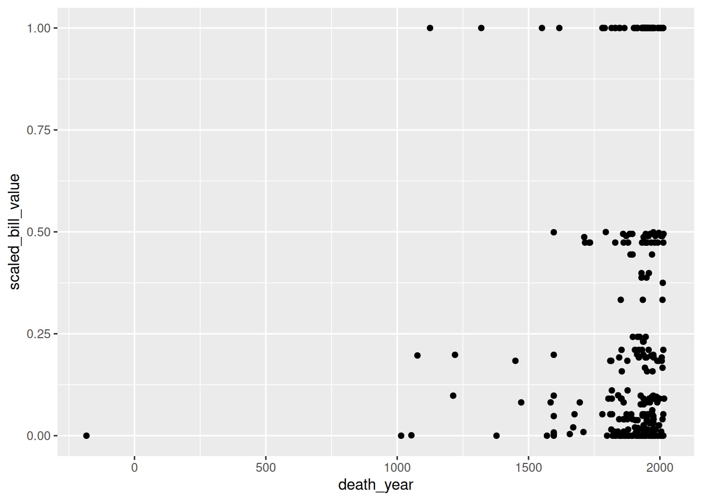
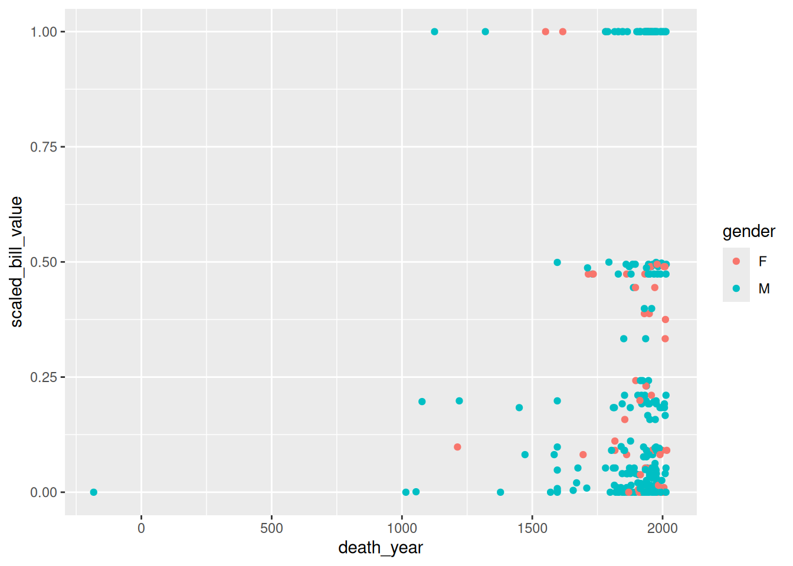
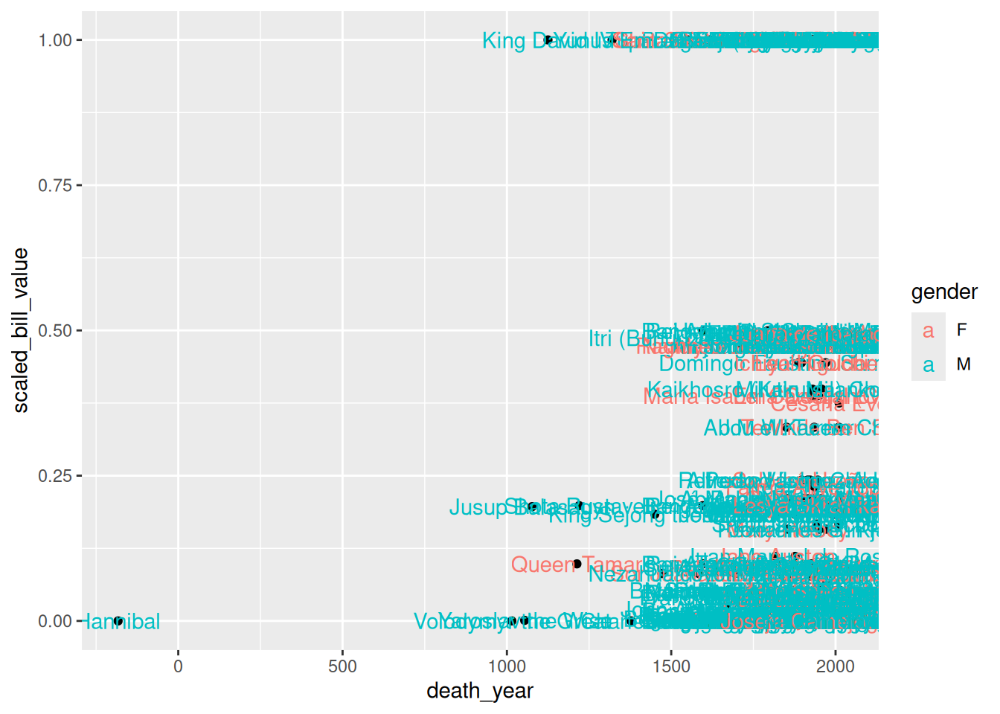
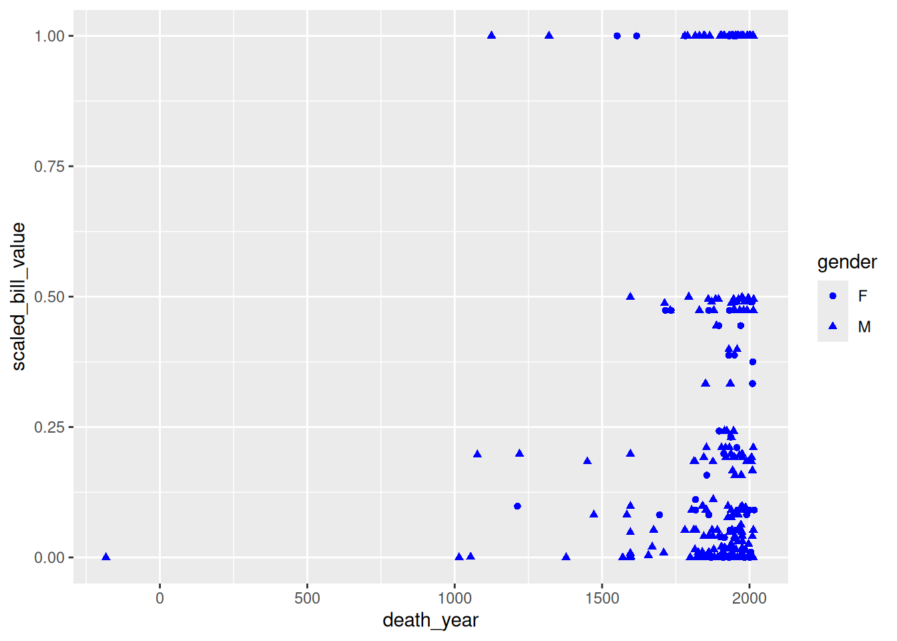
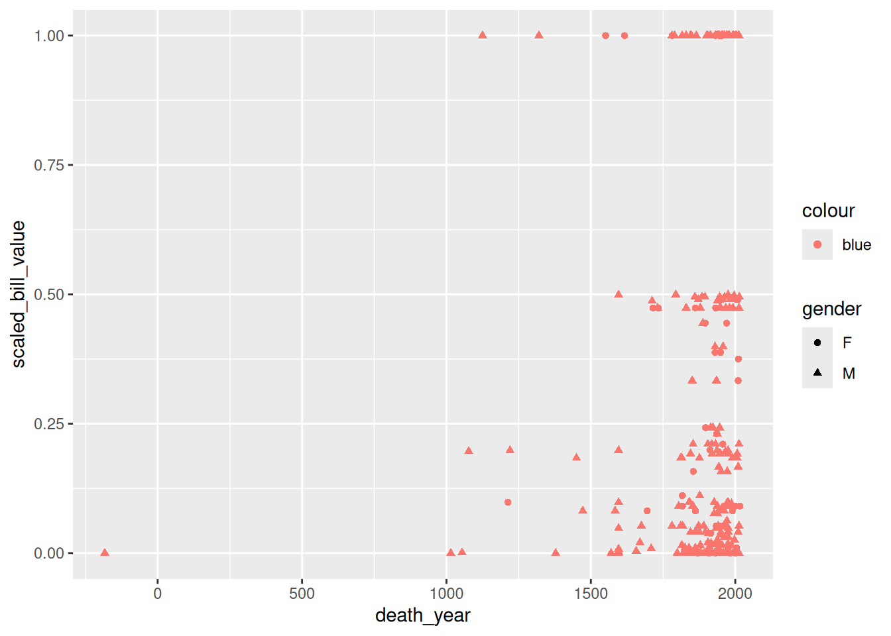
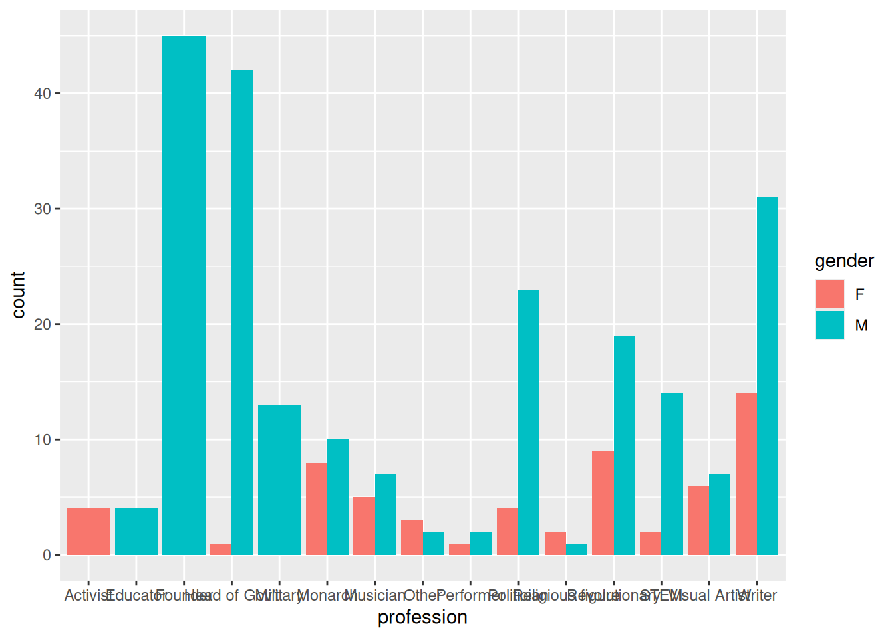

x = list(first = c(1, 2, 3), second = sin, third = c("hi", "hello"))
y = x[c(1, 3)]
y$first
[1] 1 2 3
$third
[1] "hi" "hello"class(y)[1] "list"After completing this chapter, learners should be able to:
[ versus [[sapply or lapplyNow that you have a solid foundation in the basic functions and data structures of R, you can move on to its most popular application: data analysis. In this chapter, you’ll learn how to efficiently explore and summarize data with visualizations and statistics. Along the way, you’ll also learn how to use apply functions, which are essential to fluency in R.
This section explains how to get and set data in a data frame, expanding on the indexing techniques you learned in Section 2.4. Under the hood, every data frame is a list, so first you’ll learn about indexing lists.
Lists are a container for other types of R objects. When you select an element from a list, you can either keep the container (the list) or discard it. The indexing operator [ almost always keeps containers.
As an example, let’s get some elements from a small list:
x = list(first = c(1, 2, 3), second = sin, third = c("hi", "hello"))
y = x[c(1, 3)]
y$first
[1] 1 2 3
$third
[1] "hi" "hello"class(y)[1] "list"The result is still a list. Even if we get just one element, the result of indexing a list with [ is a list:
class(x[1])[1] "list"Sometimes this will be exactly what we want. But what if we want to get the first element of x so that we can use it in a vectorized function? Or in a function that only accepts numeric arguments? We need to somehow get the element and discard the container.
The solution to this problem is the extraction operator [[, which is also called the double square bracket operator. The extraction operator is the primary way to get and set elements of lists and other containers.
Unlike the indexing operator [, the extraction operator always discards the container:
x[[1]][1] 1 2 3class(x[[1]])[1] "numeric"The tradeoff is that the extraction operator can only get or set one element at a time. Note that the element can be a vector, as above. Because it can only get or set one element at a time, the extraction operator can only index by position or name. Blank and logical indexes are not allowed.
The final difference between the index operator [ and the extraction operator [[ has to do with how they handle invalid indexes. The index operator [ returns NA for invalid vector elements, and NULL for invalid list elements:
c(1, 2)[10][1] NAx[10]$<NA>
NULLOn the other hand, the extraction operator [[ raises an error for invalid elements:
x[[10]]Error in x[[10]]: subscript out of boundsThe indexing operator [ and the extraction operator [[ both work with any data structure that has elements. However, you’ll generally use the indexing operator [ to index vectors, and the extraction operator [[ to index containers (such as lists).
For two-dimensional objects, like matrices and data frames, you can pass the indexing operator [ or the extraction operator [[ a separate index for each dimension. The rows come first:
DATA[ROWS, COLUMNS]For instance, let’s get the first 3 rows and all columns of the least terns data:
terns[1:3, ] year site_name site_name_2013_2018 site_name_1988_2001
1 2000 PITTSBURG POWER PLANT Pittsburg Power Plant NA_2013_2018 POLYGON
2 2000 ALBANY CENTRAL AVE NA_NO POLYGON Albany Central Avenue
3 2000 ALAMEDA POINT Alameda Point NA_2013_2018 POLYGON
site_abbr region_3 region_4 event bp_min bp_max fl_min fl_max total_nests
1 PITT_POWER S.F._BAY S.F._BAY LA_NINA 15 15 16 18 15
2 AL_CENTAVE S.F._BAY S.F._BAY LA_NINA 6 12 1 1 20
3 ALAM_PT S.F._BAY S.F._BAY LA_NINA 282 301 200 230 312
nonpred_eggs nonpred_chicks nonpred_fl nonpred_ad pred_control pred_eggs
1 3 0 0 0 4
2 NA NA NA NA NA
3 124 81 2 1 17
pred_chicks pred_fl pred_ad pred_pefa pred_coy_fox pred_meso pred_owlspp
1 2 0 0 N N N N
2 NA NA NA
3 0 0 0 N N N N
pred_corvid pred_other_raptor pred_other_avian pred_misc total_pefa
1 Y Y N N 0
2 NA
3 N Y Y N 0
total_coy_fox total_meso total_owlspp total_corvid total_other_raptor
1 0 0 0 4 2
2 NA NA NA NA NA
3 0 0 0 0 6
total_other_avian total_misc first_observed last_observed first_nest
1 0 0 2000-05-11 2000-08-05 2000-05-26
2 NA NA
3 11 0 2000-05-01 2000-08-19 2000-05-16
first_chick first_fledge
1 2000-06-18 2000-07-08
2
3 2000-06-07 2000-06-30As we saw in Section 2.4.1, leaving an index blank means all elements.
As another example, let’s get the 3rd and 5th row, and the 2nd and 4th column:
terns[c(3, 5), c(2, 4)] site_name site_name_1988_2001
3 ALAMEDA POINT NA_2013_2018 POLYGON
5 OCEANO DUNES STATE VEHICULAR RECREATION AREA NA_2013_2018 POLYGONMixing several different ways of indexing is allowed. So for example, we can get the same above, but use column names instead of positions:
terns[c(3, 5), c("year", "site_name")] year site_name
3 2000 ALAMEDA POINT
5 2000 OCEANO DUNES STATE VEHICULAR RECREATION AREAFor data frames, it’s especially common to index the rows by condition and the columns by name. For instance, let’s get the site_name and bp_min columns for all year 2000 observations in the least terns data set:
result = terns[terns$year == 2000, c("site_name", "bp_min")]
head(result) site_name bp_min
1 PITTSBURG POWER PLANT 15
2 ALBANY CENTRAL AVE 6
3 ALAMEDA POINT 282
4 KETTLEMAN CITY 2
5 OCEANO DUNES STATE VEHICULAR RECREATION AREA 4
6 RANCHO GUADALUPE DUNES PRESERVE 9Also see Section 5.2 for a case where the [ operator behaves in a surprising way.
A package is a collection of functions for use in R. Packages usually include documentation, and can also contain examples, vignettes, and data sets. Most packages are developed by members of the R community, so quality varies. There are also a few packages that are built into R but provide extra features. We’ll use a package in Section 3.3, so we’re learning about them now.
The Comprehensive R Archive Network, or CRAN, is the main place people publish packages. As of writing, there were 18,619 packages posted to CRAN. This number has been steadily increasing as R has grown in popularity.
Packages span a wide variety of topics and disciplines. There are packages related to statistics, social sciences, geography, genetics, physics, biology, pharmacology, economics, agriculture, and more. The best way to find packages is to search online, but the CRAN website also provides “task views” if you want to browse popular packages related to a specific discipline.
The install.packages function installs one or more packages from CRAN. Its first argument is the packages to install, as a character vector.
When you run install.packages, R will ask you to choose which mirror to download the package from. A mirror is a web server that has the same set of files as some other server. Mirrors are used to make downloads faster and to provide redundancy so that if a server stops working, files are still available somewhere else. CRAN has dozens of mirrors; you should choose one that’s geographically nearby, since that usually produces the best download speeds. If you aren’t sure which mirror to choose, you can use the 0-Cloud mirror, which attempts to automatically choose a mirror near you.
As an example, here’s the code to install the remotes package:
install.packages("remotes")If you run the code above, you’ll be asked to select a mirror, and then see output that looks something like this:
--- Please select a CRAN mirror for use in this session ---
trying URL 'https://cloud.r-project.org/src/contrib/remotes_2.3.0.tar.gz'
Content type 'application/x-gzip' length 148405 bytes (144 KB)
==================================================
downloaded 144 KB
* installing *source* package ‘remotes’ ...
** package ‘remotes’ successfully unpacked and MD5 sums checked
** using staged installation
** R
** inst
** byte-compile and prepare package for lazy loading
** help
*** installing help indices
** building package indices
** installing vignettes
** testing if installed package can be loaded from temporary location
** testing if installed package can be loaded from final location
** testing if installed package keeps a record of temporary installation path
* DONE (remotes)
The downloaded source packages are in
‘/tmp/Rtmp8t6iGa/downloaded_packages’R goes through a variety of steps to install a package, even installing other packages that the package depends on. You can tell that a package installation succeeded by the final line DONE. When a package installation fails, R prints an error message explaining the problem instead.
Once a package is installed, it stays on your computer until you remove it or remove R. This means you only need to install each package once. However, most packages are periodically updated. You can reinstall a package using install.packages the same way as above to get the latest version.
Alternatively, you can update all of the R packages you have installed at once by calling the update.packages function. Beware that this may take a long time if you have a lot of packages installed.
The function to remove packages is remove.packages. Like install.packages, this function’s first argument is the packages to remove, as a character vector.
If you want to see which packages are installed, you can use the installed.packages function. It does not require any arguments. It returns a matrix with one row for each package and columns that contain a variety of information. Here’s an example:
packages = installed.packages()
# Just print the version numbers for 10 packages.
packages[1:10, "Version"]assertthat base base64enc boot bslib cachem cellranger
"0.2.1" "4.5.1" "0.1-3" "1.3-32" "0.9.0" "1.1.0" "1.1.0"
class cli cluster
"7.3-23" "3.6.5" "2.1.8.1" You’ll see a different set of packages, since you have a different computer.
Before you can use the functions (or other resources) in an installed package, you must load the package with the library function. R doesn’t load packages automatically because each package you load uses memory and may conflict with other packages. Thus you should only load the packages you need for whatever it is that you want to do. When you restart R, the loaded packages are cleared and you must again load any packages you want to use.
Let’s load the remotes package we installed earlier:
library("remotes")The library function works with or without quotes around the package name, so you may also see people write things like library(remotes). We recommend using quotes to make it unambiguous that you are not referring to a variable.
A handful of packages print out a message when loaded, but the vast majority do not. Thus you can assume the call to library was successful if nothing is printed. If something goes wrong while loading a package, R will print out an error message explaining the problem.
Finally, not all R packages are published to CRAN. GitHub is another popular place to publish R packages, especially ones that are experimental or still in development. Unlike CRAN, GitHub is a general-purpose website for publishing code written in any programming language, so it contains much more than just R packages and is not specifically R-focused.
The remotes package that we just installed and loaded provides functions to install packages from GitHub. It is generally better to install packages from CRAN when they are available there, since the versions on CRAN tend to be more stable and intended for a wide audience. However, if you want to install a package from GitHub, you can learn more about the remotes package by reading its online documentation.
There are three popular systems for creating visualizations in R:
plot function)These three systems are not interoperable! Consequently, it’s best to choose one to use exclusively. Compared to base R, both lattice and ggplot2 are better at handling grouped data and generally require less code to create a nice-looking visualization.
The ggplot2 package is so popular that there are now knockoff packages for other data-science-oriented programming languages like Python and Julia. The package is also part of the Tidyverse, a popular collection of R packages designed to work well together. Because of these advantages, we’ll use ggplot2 for visualizations in this and all future lessons.
ggplot2 has detailed documentation and also a cheatsheet.
The “gg” in ggplot2 stands for grammar of graphics. The idea of a grammar of graphics is that visualizations can be built up in layers. In ggplot2, the three layers every plot must have are:
There are also several optional layers. Here are a few:
| Layer | Description |
|---|---|
| scales | Title, label, and axis value settings |
| facets | Side-by-side plots |
| guides | Axis and legend position settings |
| annotations | Shapes that are not mapped to data |
| coordinates | Coordinate systems (Cartesian, logarithmic, polar) |
Let’s visualize the California least terns data set from Section 1.8 to see how the grammar of graphics works in practice. But what kind of plot should we make? It depends on what we want to know about the data set!
Suppose we want to understand the relationship between the number of breeding pairs and the total number of nests at each site, and whether this relationship is affected by climate events. One way to show the relationship between two numerical features like these is to make a scatter plot.
Before we can make the plot, we need to load ggplot2. As always, if this is your first time using the package, you’ll have to install it. Then you can load the package:
# install.packages("ggplot2")
library("ggplot2")The data layer determines the data set(s) used to make the plot.
ggplot2 and most other Tidyverse packages are designed to work with tidy data, which means:
These rules ensure data are easy to read visually and access with indexing. The least terns data set satisfies all of these rules.
All of the data sets we use in this reader are tidy. To learn how to tidy an untidy data set, see the Untidy & Relational Data chapter of DataLab’s Intermediate R workshop reader.
To set up the data layer, call the ggplot function on a data frame:
ggplot(terns)
This returns a blank plot. We still need to add a few more layers.
The geometry layer determines the shape or appearance of the visual elements of the plot. In other words, the geometry layer determines what kind of plot to make: one with points, lines, boxes, or something else.
There are many different geometries available in ggplot2. The package provides a function for each geometry, always prefixed with geom_.
To add a geometry layer to the plot, choose the geom_ function you want and add it to the plot with the + operator. We’ll use geom_point, which makes a scatter plot (a plot with points):
ggplot(terns) + geom_point()Error in `geom_point()`:
! Problem while setting up geom.
ℹ Error occurred in the 1st layer.
Caused by error in `compute_geom_1()`:
! `geom_point()` requires the following missing aesthetics: x and y.This returns an error message that we’re missing aesthetics x and y. We’ll learn more about aesthetics in the next section, but this error message is especially helpful: it tells us exactly what we’re missing. When you use a geometry you’re unfamiliar with, it can be helpful to run the code for just the data and geometry layer like this, to see exactly which aesthetics need to be set.
As we’ll see later, it’s possible to add multiple geometries to a plot.
The aesthetic layer determines the relationship between the data and the geometry. Use the aesthetic layer to map features in the data to aesthetics (visual elements) of the geometry.
The aes function creates an aesthetic layer. The syntax is:
aes(AESTHETIC = FEATURE, ...)The names of the aesthetics depend on the geometry, but some common ones are x, y, color, fill, shape, and size. There is more information about and examples of aesthetic names in the documentation.
For the scatter plot of breeding pairs against total nests, we’ll put bp_min on the x-axis and total_nests on the y-axis. Below, we set both of these aesthetics. We also enclose all of the code for the plot in parentheses () so that we can put the code for each layer on a separate line, which makes the layers easier to distinguish:
ggplot(terns) +
aes(x = bp_min, y = total_nests) +
geom_point()Warning: Removed 8 rows containing missing values or values outside the scale range
(`geom_point()`).
In the aes function, column names are never quoted.
In older versions of ggplot2, you must pass the aesthetic layer as the second argument of the ggplot function rather than using + to add it to the plot. This syntax is still widely used:
ggplot(terns, aes(x = bp_min, y = total_nests)) +
geom_point()Warning: Removed 8 rows containing missing values or values outside the scale range
(`geom_point()`).
At this point, we’ve supplied all three layers necessary to make a plot: data, geometry, and aesthetics. The plot shows what looks like a linear relationship between number of breeding pairs and total nests. To refine the plot, you can add more layers and/or set parameters on the layers you have.
Let’s add another aesthetic to the plot: we’ll make the color and shape of each point correspond to event, the climate event for each observation:
ggplot(terns) +
aes(x = bp_min, y = total_nests, color = event, shape = event) +
geom_point()Warning: Removed 8 rows containing missing values or values outside the scale range
(`geom_point()`).
Using color and shape for the same feature is redundant, but ensures that the plot is accessible to colorblind people.
Each observation in the least terns data corresponds to a specific year and site. What if we label the points with their years? You can add text labels to a plot with geom_text. The required aesthetic for this geometry is label:
ggplot(terns) +
aes(
x = bp_min, y = total_nests,
color = event, shape = event,
label = year
) +
geom_point() +
geom_text()Warning: Removed 8 rows containing missing values or values outside the scale range
(`geom_point()`).Warning: Removed 8 rows containing missing values or values outside the scale range
(`geom_text()`).
The labels make the plot more difficult to read and probably would even if we made them smaller, because there are so many points on the plot. Making a high-quality visualization is typically a process of drafting and revising, similar to writing a high-quality essay. In this example, adding year labels to the plot doesn’t work well, so we’ll backtrack and leave them off of the plot. If accounting for year was critical to our research question, we could do it in other ways, such as by making separate plots for each year.
Before we remove the labels, let’s use them to demonstrate an important point about using multiple geometry and aesthetic layers: when you add an aesthetic layer to a plot, it applies to the entire plot. You can also set an aesthetic layer for an individual geometry by passing the layer as the first argument in the geom_ function. Here’s the same plot as above, but with the color aesthetic only set for the labels:
ggplot(terns) +
aes(
x = bp_min, y = total_nests,
shape = event,
label = year
) +
geom_point() +
geom_text(aes(color = event))Warning: Removed 8 rows containing missing values or values outside the scale range
(`geom_point()`).Warning: Removed 8 rows containing missing values or values outside the scale range
(`geom_text()`).Notice that the points are no longer color-coded. Where you put aesthetic layers matters.
If you want to set an aesthetic to a constant value, rather than one that’s data dependent, do so in the geometry layer rather than the aesthetic layer.
For instance, suppose we want to make all of the points blue and use only point shape to indicate climate events:
ggplot(terns) +
aes(
x = bp_min, y = total_nests,
shape = event
) +
geom_point(color = "blue")Warning: Removed 8 rows containing missing values or values outside the scale range
(`geom_point()`).
If you set an aesthetic to a constant value inside of the aesthetic layer, the results you get might not be what you expect:
ggplot(terns) +
aes(
x = bp_min, y = total_nests,
color = "blue", shape = event,
label = year
) +
geom_point() +
geom_text()Warning: Removed 8 rows containing missing values or values outside the scale range
(`geom_point()`).Warning: Removed 8 rows containing missing values or values outside the scale range
(`geom_text()`).
The scales layer controls the title, axis labels, and axis scales of the plot. Most of the functions in the scales layer are prefixed with scale_, but not all of them.
The labs function is especially important, because it’s used to set the title and axis labels. Visualizations should generally have a title and axis labels, to aid the viewer:
ggplot(terns) +
aes(
x = bp_min, y = total_nests,
color = event, shape = event
) +
geom_point() +
labs(
x = "Minimum Reported Breeding Pairs",
y = "Total Nests",
color = "Climate Event", shape = "Climate Event",
title = "California Least Terns: Breeding Pairs vs. Nests"
)Warning: Removed 8 rows containing missing values or values outside the scale range
(`geom_point()`).
Notice that to set the title for a legend with labs, you can set the parameters of the same names as the corresponding aesthetics. While our plot is still far from perfect—some of the points are hard to see because of how many there are—it’s now good enough to provide some insight into the relationship between number of breeding pairs and nests.
You can use the ggsave function to save a plot you’ve assigned to a variable or the most recent plot you created (with no argument to ggsave):
ggsave("myplot.png")The file format is selected automatically based on the extension. Common formats include PNG, TIFF, SVG, and PDF.
PNG and SVG are good choices for sharing visualizations online, while TIFF and PDF are good choices for print. Many journals require that visualizations be in TIFF format.
You can also save a plot with one of R’s “plot device” functions. The steps are:
png, jpeg, pdf, bmp, tiff, or svg.dev.off to indicate that you’re done plotting.This strategy works with any of R’s graphics systems (not just ggplot2).
Here’s an example:
# Run these lines in the console, not the notebook!
jpeg("myplot.jpeg")
ggplot(terns) +
aes(
x = bp_min, y = total_nests,
color = event, shape = event
) +
geom_point() +
labs(
x = "Minimum Reported Breeding Pairs",
y = "Total Nests",
color = "Climate Event", shape = "Climate Event",
title = "California Least Terns: Breeding Pairs vs. Nests"
)
dev.off()Suppose we want to visualize how many fledglings there are each year, further broken down by region. A bar plot is one appropriate way to represent this visually.
The geometry for a bar plot is geom_bar. Since bar plots are mainly used to display frequencies, by default the geom_bar function counts the number of observations in each category on the x-axis and displays these counts on the y-axis. You can make geom_bar display values from a column on the y-axis by setting the weight aesthetic:
ggplot(terns) +
aes(x = year, weight = fl_min, fill = region_3) +
geom_bar()
Every geometry layer has a corresponding statistics layer, which transforms feature values into quantities to plot. For many geometries, the default statistics layer is the only one that makes sense.
Bar plots are an exception. The default statistics layer is stat_count, which counts observations. If you already have counts (or just want to display some quantities as bars), you need stat_identity (or the weight aesthetic described above). Here’s one way to change the statistics layer:
ggplot(terns) +
aes(x = year, y = fl_min, fill = region_3) +
geom_bar(stat = "identity")Warning: Removed 12 rows containing missing values or values outside the scale range
(`geom_bar()`).
This produces the same plot as setting weight and using the default statistics layer stat_count.
The plot reveals that there are a few extraneous categories in the region_3 column: ARIZONA, KINGS, and SACRAMENTO. These might or might not be erroneous—and it would be good to investigate—but they don’t add anything to this plot, so let’s exclude them.
Let’s also change the color map, the palette of colors used for the categories. These are both properties of the scale layer for the fill aesthetic, so we’ll use a scale_fill_ function. In particular, we’ll use the “viridis” color map, and since the fill color corresponds to categorical (discrete) data, we’ll use scale_fill_viridis_d. We’ll also add labels:
terms_to_keep = c("S.F._BAY", "CENTRAL", "SOUTHERN")
terns_filtered = terns[terns$region_3 %in% terms_to_keep, ]
ggplot(terns_filtered) +
aes(x = year, weight = fl_min, fill = region_3) +
geom_bar() +
scale_fill_viridis_d() +
labs(
title = "California Least Terns: Fledglings",
x = "Year",
y = "Minimum Reported Fledglings",
fill = "Region"
)
You can read more about the viridis color map in ggplot2’s documentation for this function. The plot reveals that the data set is missing 2001-2003 and that overall, fledgling counts seem to be declining in recent years.
The setting position = "dodge" instructs geom_bar to put the bars side-by-side rather than stacking them.
Designing high-quality visualizations goes beyond just mastering which R functions to call. You also need to think carefully about what kind of data you have and what message you want to convey. This section provides a few guidelines.
The first step in data visualization is choosing an appropriate kind of plot. Here are some suggestions (not rules):
| Feature 1 | Feature 2 | Plot |
|---|---|---|
| categorical | bar, dot | |
| categorical | categorical | bar, dot, mosaic |
| numerical | box, density, histogram | |
| numerical | categorical | box, density, ridge |
| numerical | numerical | line, scatter, smooth scatter |
If you want to add a:
Once you’ve selected a plot, here are some rules you should almost always follow:
Always add a title and axis labels. These should be in plain English, not variable names!
Specify units after the axis label if the axis has units. For instance, “Height (ft)”.
Don’t forget that many people are colorblind! Also, plots are often printed in black and white. Use point and line styles to distinguish groups; color is optional.
Add a legend whenever you’ve used more than one point or line style.
Always write a few sentences explaining what the plot reveals. Don’t describe the plot, because the reader can just look at it. Instead, explain what they can learn from the plot and point out important details that are easily overlooked.
Sometimes points get plotted on top of each other. This is called overplotting. Plots with a lot of overplotting can be hard to read and can even misrepresent the data by hiding how many points are present. Use a two-dimensional density plot or jitter the points to deal with overplotting.
For side-by-side plots, use the same axis scales for both plots so that comparing them is not deceptive.
Visualization design is a deep topic, and whole books have been written about it. One resource where you can learn more is DataLab’s Principles of Data Visualization Workshop Reader.
Section 2.1.3 introduced vectorization, a convenient and efficient way to compute multiple results. That section also mentioned that some of R’s functions—the ones that summarize or aggregate data—are not vectorized.
The class function is an example of a function that’s not vectorized. If we call the class function on the least terns data set, we get just one result for the data set as a whole:
class(terns)[1] "data.frame"What if we want to get the class of each column? We can get the class for a single column by selecting the column with $, the dollar sign operator:
class(terns$year)[1] "integer"But what if we want the classes for all the columns? We could write a call to class for each column, but that would be tedious. When you’re working with a programming language, you should try to avoid tedium; there’s usually a better, more automated way.
Section 2.2.1 pointed out that data frames are technically lists, where each column is one element. With that in mind, what we need here is a line of code that calls class on each element of the data frame. The idea is similar to vectorization, but since we have a list and a non-vectorized function, we have to do a bit more than just call class(terns).
The lapply function calls, or applies, a function on each element of a list or vector. The syntax is:
lapply(X, FUN, ...)The function FUN is called once for each element of X, with the element as the first argument. The ... is for additional arguments to FUN, which are held constant across all the elements.
Let’s try this out with the least terns data and the class function:
lapply(terns, class)$year
[1] "integer"
$site_name
[1] "character"
$site_name_2013_2018
[1] "character"
$site_name_1988_2001
[1] "character"
$site_abbr
[1] "character"
$region_3
[1] "character"
$region_4
[1] "character"
$event
[1] "character"
$bp_min
[1] "numeric"
$bp_max
[1] "numeric"
$fl_min
[1] "integer"
$fl_max
[1] "integer"
$total_nests
[1] "integer"
$nonpred_eggs
[1] "integer"
$nonpred_chicks
[1] "integer"
$nonpred_fl
[1] "integer"
$nonpred_ad
[1] "integer"
$pred_control
[1] "character"
$pred_eggs
[1] "integer"
$pred_chicks
[1] "integer"
$pred_fl
[1] "integer"
$pred_ad
[1] "integer"
$pred_pefa
[1] "character"
$pred_coy_fox
[1] "character"
$pred_meso
[1] "character"
$pred_owlspp
[1] "character"
$pred_corvid
[1] "character"
$pred_other_raptor
[1] "character"
$pred_other_avian
[1] "character"
$pred_misc
[1] "character"
$total_pefa
[1] "integer"
$total_coy_fox
[1] "integer"
$total_meso
[1] "integer"
$total_owlspp
[1] "integer"
$total_corvid
[1] "integer"
$total_other_raptor
[1] "integer"
$total_other_avian
[1] "integer"
$total_misc
[1] "integer"
$first_observed
[1] "character"
$last_observed
[1] "character"
$first_nest
[1] "character"
$first_chick
[1] "character"
$first_fledge
[1] "character"The result is similar to if the class function was vectorized. In fact, if we use a vector and a vectorized function with lapply, the result is nearly identical to the result from vectorization:
x = c(1, 2, pi)
sin(x)[1] 8.414710e-01 9.092974e-01 1.224647e-16lapply(x, sin)[[1]]
[1] 0.841471
[[2]]
[1] 0.9092974
[[3]]
[1] 1.224647e-16The only difference is that the result from lapply is a list. In fact, the lapply function always returns a list with one element for each element of the input data. The “l” in lapply stands for “list”.
The lapply function is one member of a family of functions called apply functions. All of the apply functions provide ways to apply a function repeatedly to different parts of a data structure. We’ll meet a few more apply functions soon.
When you have a choice between using vectorization or an apply function, you should always choose vectorization. Vectorization is clearer—compare the two lines of code above—and it’s also significantly more efficient. In fact, vectorization is the most efficient way to call a function repeatedly in R.
As we saw with the class function, there are some situations where vectorization is not possible. That’s when you should think about using an apply function.
sapply FunctionThe related sapply function calls a function on each element of a list or vector, and simplifies the result. That last part is the crucial difference compared to lapply. When results from the calls all have the same type and length, sapply returns a vector or matrix instead of a list. When the results have different types or lengths, the result is the same as for lapply. The “s” in sapply stands for “simplify”.
For instance, if we use sapply to find the classes of the columns in the least terns data, we get a character vector:
sapply(terns, class) year site_name site_name_2013_2018 site_name_1988_2001
"integer" "character" "character" "character"
site_abbr region_3 region_4 event
"character" "character" "character" "character"
bp_min bp_max fl_min fl_max
"numeric" "numeric" "integer" "integer"
total_nests nonpred_eggs nonpred_chicks nonpred_fl
"integer" "integer" "integer" "integer"
nonpred_ad pred_control pred_eggs pred_chicks
"integer" "character" "integer" "integer"
pred_fl pred_ad pred_pefa pred_coy_fox
"integer" "integer" "character" "character"
pred_meso pred_owlspp pred_corvid pred_other_raptor
"character" "character" "character" "character"
pred_other_avian pred_misc total_pefa total_coy_fox
"character" "character" "integer" "integer"
total_meso total_owlspp total_corvid total_other_raptor
"integer" "integer" "integer" "integer"
total_other_avian total_misc first_observed last_observed
"integer" "integer" "character" "character"
first_nest first_chick first_fledge
"character" "character" "character" Likewise, if we use sapply to compute the sin values, we get a numeric vector, the same as from vectorization:
sapply(x, sin)[1] 8.414710e-01 9.092974e-01 1.224647e-16In spite of that, vectorization is still more efficient than sapply, so use vectorization instead when possible.
Apply functions are incredibly useful for summarizing data. For example, suppose we want to compute the frequencies for all of the columns in the least terns data set that aren’t numeric.
First, we need to identify the columns. One way to do this is with the is.numeric function. Despite the name, this function actually tests whether its argument is a real number, not whether it its argument is a numeric vector. In other words, it also returns true for integer values. We can use sapply to apply this function to all of the columns in the least terns data set:
is_not_number = !sapply(terns, is.numeric)
is_not_number year site_name site_name_2013_2018 site_name_1988_2001
FALSE TRUE TRUE TRUE
site_abbr region_3 region_4 event
TRUE TRUE TRUE TRUE
bp_min bp_max fl_min fl_max
FALSE FALSE FALSE FALSE
total_nests nonpred_eggs nonpred_chicks nonpred_fl
FALSE FALSE FALSE FALSE
nonpred_ad pred_control pred_eggs pred_chicks
FALSE TRUE FALSE FALSE
pred_fl pred_ad pred_pefa pred_coy_fox
FALSE FALSE TRUE TRUE
pred_meso pred_owlspp pred_corvid pred_other_raptor
TRUE TRUE TRUE TRUE
pred_other_avian pred_misc total_pefa total_coy_fox
TRUE TRUE FALSE FALSE
total_meso total_owlspp total_corvid total_other_raptor
FALSE FALSE FALSE FALSE
total_other_avian total_misc first_observed last_observed
FALSE FALSE TRUE TRUE
first_nest first_chick first_fledge
TRUE TRUE TRUE Is it worth using R code to identify the non-numeric columns? Since there are only 43 columns in the least terns data set, maybe not. But if the data set was larger, with say 100 columns, it definitely would be.
In general, it’s a good habit to use R to do things rather than do them manually. You’ll get more practice programming, and your code will be more flexible if you want to adapt it to other data sets.
Now that we know which columns are non-numeric, we can use the table function to compute frequencies. We only want to compute frequencies for those columns, so we need to subset the data:
lapply(terns[, is_not_number], table)$site_name
ALAMEDA POINT
21
ALBANY CENTRAL AVE
2
ANAHEIM LAKE
3
ARIZONA GLENDALE
1
BATIQUITOS LAGOON ECOLOGICAL RESERVE
21
BOLSA CHICA ECOLOGICAL RESERVE
21
BURRIS ISLAND
18
CHULA VISTA WILDLIFE RESERVE
21
COAL OIL POINT RESERVE
14
DSTREET FILL SWEETWATER MARSH NWR
21
EDEN LANDING ECOLOGICAL RESERVE
17
FAIRBANKS RANCH
9
GUADALUPE NIPOMO DUNES NWR
1
HAYWARD REGIONAL SHORELINE
19
HOLLYWOOD BEACH
18
HUNTINGTON STATE BEACH
21
KETTLEMAN CITY
15
LA HARBOR
21
MALIBU LAGOON
7
MCB CAMP PENDLETON
21
MISSION BAY FAA ISLAND
21
MISSION BAY MARINERS POINT
21
MISSION BAY NORTH FIESTA ISLAND
21
MISSION BAY SAN DIEGO RIVER MOUTH
14
MISSION BAY STONY POINT
18
MONTEZUMA WETLANDS
18
NAPA SONOMA MARSH WILDLIFE AREA
17
NAS NORTH ISLAND
21
NAVAL AMPHIBIOUS BASE CORONADO
21
NBVC POINT MUGU
21
OCEANO DUNES STATE VEHICULAR RECREATION AREA
21
ORMOND BEACH
21
PITTSBURG POWER PLANT
15
RANCHO GUADALUPE DUNES PRESERVE
20
SACRAMENTO BUFFERLANDS
10
SALTON SEA
7
SAN DIEGUITO LAGOON ECOLOGICAL RESERVE
10
SAN ELIJO LAGOON ECOLOGICAL RESERVE
21
SAN PABLO BAY NWR
3
SANTA CLARA RIVER MCGRATH STATE BEACH
21
SATICOY UNITED WATER CONSERVATION DISTRICT
9
SDIA LINDBERGH FIELD
21
SEAL BEACH NWR ANAHEIM BAY
21
SILVER STRAND STATE BEACH
1
SOUTH SAN DIEGO BAY UNIT SDNWR SALTWORKS
21
TIJUANA ESTUARY NERR
21
UPPER NEWPORT BAY ECOLOGICAL RESERVE
21
VANDENBERG SFB
21
VENICE BEACH
21
$site_name_2013_2018
3
Alameda Point
21
Anaheim Lake
3
Batiquitos Lagoon
21
Bolsa Chica
21
Bufferlands
10
Burris Basin
18
Camp Pendleton
21
Chula Vista Wildlife Refuge
21
Coal Oil Point Reserve
14
D Street Fill
21
Eden Landing Ecological Reserve
17
FAA Island
21
Fairbanks Ranch
9
Hayward Regional Shoreline
19
Hollywood Beach
18
Huntington Beach State Park
21
Kettleman
15
Lindbergh Field/Former Naval Training Center
21
Malibu Lagoon
7
Mariner's Point
21
Montezuma
18
NA_NO POLYGON
5
Napa Sonoma Marsh Wildlife Area Huichica Unit (Pond 7/7A)
17
Naval Base Coronado
42
NBVC Point Mugu
21
North Fiesta Island
21
Oceano Dunes State Vehicular Recreation Area
21
Ormond Beach
21
Pittsburg Power Plant
15
Port of LA
21
Rancho Guadalupe Dunes Preserve
20
Salton Sea
7
Saltworks
21
San Diego River Mouth
14
San Diequito Lagoon
10
San Elijo Lagoon
21
Santa Clara River
21
Saticoy United Water Conservation District
9
Seal Beach National Wildlife Refuge
21
Stony Point
18
Tijuana Estuary
21
Upper Newport Bay
21
Vandenberg AFB
21
Venice Beach
21
$site_name_1988_2001
Albany Central Avenue NA_2013_2018 POLYGON
3 2 783
NA_NO POLYGON
3
$site_abbr
AL_CENTAVE ALAM_PT ANA_LK ARZ_GLEN BCER BLER
2 21 3 1 21 21
BUR_ISL COAL_OIL CV D_ST ELER FAIR_RAN
18 14 21 21 17 9
GND_NWR HAY_REG_SHOR HB HSB KET_CTY LA_HARB
1 19 18 21 15 21
MAL_LAG MB_FAA MB_MAR_PT MB_NFI MB_SDRIV_S MB_STONY
7 21 21 21 14 18
MCBCP MONT NAB NASNI NSMWA OCEANO_DUNES
21 18 21 21 17 21
ORMOND PITT_POWER PT_MUGU RGDP S_CLAR_MCG SAC_BUF
21 15 21 20 21 10
SALT SALT_SEA SAN_ELIJO SANDIEGU_LAG SAT_WCD SDIA_LF
21 7 21 10 9 21
SEAL_BCH_NWR SLVRSTRD SPBNWR TJ_RIV UNBER VAN_SFB
21 1 3 21 21 21
VEN_BCH
21
$region_3
ARIZONA CENTRAL KINGS S.F._BAY SACRAMENTO SOUTHERN
1 77 15 112 10 576
$region_4
ARIZONA CENTRAL KINGS S.F._BAY SACRAMENTO SOUTHERN VENTURA
1 77 15 112 10 486 90
$event
EL_NINO LA_NINA NEUTRAL
120 258 413
$pred_control
N Y
342 134 315
$pred_pefa
N Y
143 423 225
$pred_coy_fox
N Y
142 535 114
$pred_meso
N Y
142 552 97
$pred_owlspp
N Y
142 531 118
$pred_corvid
N Y
142 423 226
$pred_other_raptor
N NN Y
145 437 1 208
$pred_other_avian
N Y
143 395 253
$pred_misc
N Y
159 415 217
$first_observed
2000-04-16 2000-04-19 2000-04-21 2000-04-22 2000-04-23 2000-04-26
141 1 1 1 1 1 1
2000-04-28 2000-05-01 2000-05-04 2000-05-06 2000-05-07 2000-05-09 2000-05-11
5 1 3 1 2 1 1
2000-05-21 2000-06-06 2000-06-10 2004-04-08 2004-04-11 2004-04-12 2004-04-21
1 1 1 1 1 2 1
2004-04-22 2004-04-23 2004-04-27 2004-04-30 2004-05-01 2004-05-03 2004-05-07
2 1 1 1 1 2 1
2004-05-09 2004-05-10 2004-05-14 2004-05-17 2004-05-31 2004-06-03 2005-04-14
1 1 1 1 1 1 1
2005-04-15 2005-04-18 2005-04-19 2005-04-20 2005-04-21 2005-04-22 2005-04-23
1 2 1 2 2 1 2
2005-04-24 2005-04-28 2005-04-29 2005-04-30 2005-05-01 2005-05-05 2005-05-07
1 2 1 1 1 1 1
2005-05-08 2005-05-10 2005-05-13 2005-05-27 2005-05-28 2006-04-08 2006-04-10
1 1 1 1 1 2 1
2006-04-13 2006-04-15 2006-04-16 2006-04-20 2006-04-22 2006-04-27 2006-04-28
1 1 1 1 3 1 1
2006-05-01 2006-05-03 2006-05-08 2006-05-10 2006-05-14 2006-05-15 2006-05-20
1 2 1 1 2 1 1
2006-06-23 2006-06-24 2007-04-16 2007-04-18 2007-04-22 2007-04-23 2007-04-24
1 1 1 1 1 1 2
2007-04-25 2007-04-26 2007-04-28 2007-05-01 2007-05-02 2007-05-03 2007-05-11
4 2 1 3 3 1 1
2007-05-13 2007-05-14 2007-05-18 2007-05-24 2007-06-02 2007-06-06 2007-06-08
2 1 1 1 1 1 1
2008-04-11 2008-04-16 2008-04-23 2008-04-24 2008-04-25 2008-04-27 2008-04-28
1 2 1 4 1 3 3
2008-05-01 2008-05-04 2008-05-05 2008-05-07 2008-05-08 2008-05-09 2008-05-12
1 1 1 1 1 2 1
2008-05-14 2008-05-15 2008-05-21 2008-05-22 2008-05-24 2008-05-28 2008-05-31
1 1 1 1 1 1 1
2009-04-16 2009-04-19 2009-04-22 2009-04-23 2009-04-24 2009-04-25 2009-04-26
2 1 1 4 2 1 3
2009-04-29 2009-04-30 2009-05-02 2009-05-03 2009-05-04 2009-05-05 2009-05-06
1 1 1 2 1 1 1
2009-05-08 2009-05-11 2009-05-13 2009-05-28 2010-04-14 2010-04-16 2010-04-17
3 1 2 1 1 2 1
2010-04-18 2010-04-19 2010-04-21 2010-04-22 2010-04-25 2010-04-27 2010-04-28
2 1 1 2 2 1 1
2010-04-29 2010-05-01 2010-05-02 2010-05-04 2010-05-06 2010-05-07 2010-05-13
1 1 1 1 1 1 2
2010-05-14 2010-05-15 2010-05-16 2010-05-26 2010-05-29 2010-05-30 2010-06-09
2 4 1 1 1 1 1
2011-04-09 2011-04-15 2011-04-18 2011-04-20 2011-04-21 2011-04-22 2011-04-24
1 1 1 1 5 2 1
2011-04-25 2011-04-27 2011-04-28 2011-04-29 2011-05-01 2011-05-04 2011-05-05
1 1 1 1 1 1 2
2011-05-07 2011-05-08 2011-05-11 2011-05-12 2011-05-14 2011-05-28 2011-06-11
1 1 1 1 3 1 1
2011-06-14 2011-06-25 2012-04-14 2012-04-15 2012-04-17 2012-04-18 2012-04-19
1 1 2 1 2 3 5
2012-04-20 2012-04-21 2012-04-22 2012-04-25 2012-04-29 2012-05-01 2012-05-03
1 2 2 1 2 1 1
2012-05-06 2012-05-08 2012-05-10 2012-05-11 2012-05-13 2012-05-14 2012-05-23
1 1 3 1 1 1 1
2012-05-30 2012-06-09 2013-04-14 2013-04-15 2013-04-18 2013-04-21 2013-04-24
1 1 1 1 1 1 2
2013-04-25 2013-04-29 2013-04-30 2013-05-01 2013-05-02 2013-05-03 2013-05-07
1 1 1 2 2 3 1
2013-05-10 2013-05-11 2013-05-12 2013-05-13 2013-05-15 2013-05-17 2013-05-19
1 1 1 1 1 1 1
2013-05-27 2013-06-01 2013-06-09 2013-06-30 2013-07-19 2014-04-15 2014-04-17
1 2 1 1 1 2 5
2014-04-19 2014-04-21 2014-04-24 2014-04-25 2014-04-26 2014-04-30 2014-05-01
1 1 1 2 1 1 1
2014-05-02 2014-05-04 2014-05-08 2014-05-09 2014-05-10 2014-05-11 2014-05-16
1 2 1 2 2 1 1
2014-05-22 2014-05-24 2014-05-25 2014-05-31 2015-04-06 2015-04-15 2015-04-17
1 2 1 1 1 2 2
2015-04-18 2015-04-19 2015-04-22 2015-04-23 2015-04-27 2015-04-29 2015-04-30
1 3 3 1 1 2 3
2015-05-01 2015-05-07 2015-05-08 2015-05-09 2015-05-14 2015-05-17 2015-05-20
3 1 2 1 2 1 1
2015-05-30 2015-06-05 2015-07-05 2015-07-07 2015-07-22 2016-04-10 2016-04-11
1 1 1 1 1 2 1
2016-04-12 2016-04-13 2016-04-14 2016-04-15 2016-04-18 2016-04-20 2016-04-21
1 1 2 1 2 1 1
2016-04-23 2016-04-26 2016-04-30 2016-05-01 2016-05-02 2016-05-03 2016-05-04
1 1 2 1 1 2 1
2016-05-06 2016-05-07 2016-05-11 2016-05-12 2016-05-14 2016-05-18 2016-05-25
2 2 2 1 1 2 1
2016-05-31 2016-06-12 2016-06-16 2016-06-18 2016-07-15 2017-04-13 2017-04-14
1 1 1 2 1 2 1
2017-04-15 2017-04-16 2017-04-17 2017-04-18 2017-04-19 2017-04-20 2017-04-21
2 1 2 2 1 1 1
2017-04-22 2017-04-24 2017-04-26 2017-04-29 2017-05-04 2017-05-06 2017-05-07
1 1 1 1 2 3 2
2017-05-10 2017-05-11 2017-05-12 2017-05-19 2017-05-25 2017-06-03 2017-07-02
3 2 1 1 2 1 1
2017-07-04 2018-03-25 2018-03-30 2018-04-13 2018-04-18 2018-04-19 2018-04-20
1 1 1 2 1 2 3
2018-04-21 2018-04-25 2018-04-26 2018-04-27 2018-04-28 2018-04-29 2018-05-04
2 2 1 1 4 2 1
2018-05-05 2018-05-10 2018-05-11 2018-05-13 2018-05-16 2018-05-20 2018-05-21
1 2 1 1 1 1 1
2019-04-06 2019-04-12 2019-04-14 2019-04-17 2019-04-18 2019-04-19 2019-04-20
1 3 1 1 1 3 2
2019-04-22 2019-04-24 2019-04-26 2019-04-27 2019-05-01 2019-05-02 2019-05-03
1 1 1 4 1 1 2
2019-05-06 2019-05-08 2019-05-09 2019-05-10 2019-05-11 2019-05-12 2020-04-06
2 1 2 1 3 1 1
2020-04-10 2020-04-11 2020-04-17 2020-04-18 2020-04-20 2020-04-21 2020-04-23
1 1 2 1 2 1 1
2020-04-24 2020-04-25 2020-04-26 2020-04-29 2020-04-30 2020-05-01 2020-05-02
2 2 2 2 2 1 1
2020-05-06 2020-05-08 2020-05-09 2020-05-10 2020-05-14 2020-05-17 2020-06-24
2 3 3 1 1 1 1
2021-04-10 2021-04-12 2021-04-13 2021-04-17 2021-04-18 2021-04-19 2021-04-21
1 1 1 1 1 2 4
2021-04-22 2021-04-23 2021-04-24 2021-04-25 2021-04-27 2021-04-28 2021-04-29
3 1 2 1 1 2 2
2021-05-01 2021-05-06 2021-05-11 2021-05-13 2021-05-16 2021-05-21 2021-05-26
1 2 1 2 1 1 1
2021-05-27 2021-06-04 2021-06-16 2022-04-10 2022-04-13 2022-04-15 2022-04-17
1 1 1 1 1 1 2
2022-04-18 2022-04-21 2022-04-22 2022-04-23 2022-04-24 2022-04-26 2022-04-28
2 2 2 1 1 2 2
2022-04-30 2022-05-05 2022-05-06 2022-05-08 2022-05-11 2022-05-14 2022-05-15
3 1 2 2 1 1 1
2022-05-17 2022-05-19 2022-05-25 2022-05-29 2023-04-15 2023-04-18 2023-04-20
2 2 1 1 1 1 2
2023-04-22 2023-04-23 2023-04-24 2023-04-26 2023-04-27 2023-04-28 2023-04-29
2 4 1 1 1 2 1
2023-04-30 2023-05-01 2023-05-03 2023-05-04 2023-05-06 2023-05-07 2023-05-10
2 1 1 1 1 2 1
2023-05-11 2023-05-17 2023-05-19 2023-05-24 2023-05-25 2023-05-27 2023-05-28
2 1 1 1 1 1 2
2023-07-23 2023-08-04 2028-04-19
1 1 1
$last_observed
2000-07-21 2000-08-05 2000-08-12 2000-08-13 2000-08-14 2000-08-17
149 1 2 1 2 1 1
2000-08-18 2000-08-19 2000-08-20 2000-08-24 2000-08-26 2000-08-30 2000-08-31
1 1 3 1 1 1 1
2000-09-01 2000-09-05 2000-09-06 2000-09-07 2000-09-15 2000-09-24 2004-06-14
1 1 1 1 1 1 1
2004-07-01 2004-07-18 2004-07-21 2004-07-22 2004-07-23 2004-08-02 2004-08-06
2 1 1 1 1 1 1
2004-08-09 2004-08-10 2004-08-13 2004-08-16 2004-08-19 2004-08-22 2004-08-23
1 1 1 1 1 1 1
2004-08-24 2004-09-03 2004-09-09 2004-09-10 2005-06-10 2005-06-17 2005-06-24
1 1 1 1 1 1 1
2005-06-29 2005-07-07 2005-07-23 2005-07-26 2005-07-28 2005-07-29 2005-07-31
1 1 1 1 1 1 1
2005-08-03 2005-08-05 2005-08-13 2005-08-15 2005-08-17 2005-08-18 2005-08-24
1 1 1 1 1 1 1
2005-08-26 2005-08-27 2005-08-29 2005-09-08 2005-09-12 2005-09-15 2006-06-18
2 1 1 2 1 1 1
2006-06-27 2006-07-13 2006-07-23 2006-07-29 2006-08-05 2006-08-07 2006-08-09
1 1 1 1 1 2 1
2006-08-11 2006-08-16 2006-08-17 2006-08-18 2006-08-31 2006-09-02 2006-09-05
1 2 1 1 1 1 1
2006-09-10 2006-09-11 2006-09-13 2006-09-17 2006-09-18 2007-06-24 2007-07-18
1 1 1 1 1 1 1
2007-08-01 2007-08-06 2007-08-08 2007-08-10 2007-08-11 2007-08-15 2007-08-17
1 1 1 1 1 2 1
2007-08-19 2007-08-20 2007-08-22 2007-08-24 2007-08-25 2007-09-02 2007-09-06
3 3 1 2 3 1 1
2007-09-08 2007-09-09 2007-09-12 2007-09-15 2008-06-09 2008-06-10 2008-06-14
1 1 1 1 1 1 1
2008-06-27 2008-07-18 2008-07-31 2008-08-05 2008-08-07 2008-08-10 2008-08-13
1 2 1 1 1 1 1
2008-08-15 2008-08-17 2008-08-19 2008-08-21 2008-08-24 2008-08-26 2008-08-28
1 3 1 1 1 1 1
2008-08-29 2008-08-31 2008-09-01 2008-09-04 2008-09-19 2008-09-20 2009-06-10
3 2 1 1 1 1 1
2009-07-13 2009-07-17 2009-07-18 2009-07-24 2009-07-26 2009-07-30 2009-08-01
1 2 1 1 1 1 1
2009-08-05 2009-08-06 2009-08-07 2009-08-10 2009-08-11 2009-08-12 2009-08-13
1 1 1 1 1 1 2
2009-08-14 2009-08-15 2009-08-19 2009-08-20 2009-08-21 2009-08-22 2009-08-24
1 1 1 1 1 1 1
2009-08-25 2009-08-27 2009-09-05 2009-09-26 2009-09-27 2010-07-01 2010-07-17
1 1 1 1 1 2 1
2010-07-21 2010-07-22 2010-07-27 2010-07-29 2010-07-30 2010-08-01 2010-08-04
1 1 1 3 2 1 1
2010-08-05 2010-08-07 2010-08-09 2010-08-11 2010-08-12 2010-08-13 2010-08-14
1 1 1 2 4 1 1
2010-08-15 2010-08-17 2010-08-18 2010-08-21 2010-08-23 2010-08-26 2010-09-01
1 1 1 1 1 1 1
2010-09-03 2011-06-25 2011-07-06 2011-07-19 2011-07-21 2011-07-26 2011-07-27
1 1 1 1 1 1 1
2011-07-29 2011-07-31 2011-08-01 2011-08-02 2011-08-03 2011-08-04 2011-08-05
3 1 1 1 1 1 1
2011-08-06 2011-08-10 2011-08-11 2011-08-13 2011-08-15 2011-08-17 2011-08-18
2 1 1 1 1 1 1
2011-08-20 2011-08-22 2011-08-23 2011-08-24 2011-08-26 2011-08-27 2012-06-13
1 1 1 1 1 3 1
2012-06-16 2012-06-19 2012-06-22 2012-07-01 2012-07-10 2012-07-12 2012-07-13
1 1 1 1 1 1 2
2012-07-17 2012-07-19 2012-07-22 2012-07-24 2012-07-25 2012-07-27 2012-08-01
1 1 1 1 1 1 1
2012-08-05 2012-08-06 2012-08-08 2012-08-09 2012-08-10 2012-08-11 2012-08-12
1 1 1 1 2 1 1
2012-08-16 2012-08-25 2012-08-26 2012-08-31 2012-09-01 2012-09-15 2013-05-09
1 1 2 1 1 2 1
2013-06-07 2013-06-09 2013-06-10 2013-06-23 2013-06-26 2013-06-28 2013-07-01
1 1 1 1 1 1 1
2013-07-10 2013-07-11 2013-07-21 2013-07-26 2013-07-28 2013-08-01 2013-08-02
1 1 1 1 1 1 1
2013-08-03 2013-08-08 2013-08-11 2013-08-12 2013-08-16 2013-08-17 2013-08-21
1 1 2 1 1 1 3
2013-08-26 2013-08-30 2013-09-02 2014-04-21 2014-05-03 2014-06-13 2014-06-29
2 1 1 1 1 1 1
2014-07-15 2014-07-16 2014-07-24 2014-07-25 2014-07-26 2014-07-27 2014-08-02
1 3 1 1 1 1 1
2014-08-03 2014-08-06 2014-08-07 2014-08-09 2014-08-10 2014-08-13 2014-08-14
2 2 1 1 1 1 2
2014-08-15 2014-08-16 2014-08-24 2014-08-30 2014-09-06 2014-09-11 2014-09-16
1 1 1 1 1 1 1
2015-05-12 2015-06-19 2015-06-22 2015-07-05 2015-07-09 2015-07-16 2015-07-17
1 1 1 1 1 2 1
2015-07-23 2015-07-24 2015-07-27 2015-07-28 2015-07-29 2015-07-30 2015-07-31
1 2 1 1 3 1 1
2015-08-03 2015-08-04 2015-08-06 2015-08-07 2015-08-09 2015-08-14 2015-08-15
1 1 1 1 1 1 1
2015-08-16 2015-08-19 2015-08-20 2015-08-21 2015-08-23 2015-08-30 2015-09-02
1 1 2 1 1 1 1
2015-09-03 2015-09-06 2016-06-02 2016-07-07 2016-07-10 2016-07-13 2016-07-14
1 1 1 1 1 2 2
2016-07-15 2016-07-17 2016-07-20 2016-07-27 2016-07-28 2016-07-30 2016-07-31
3 1 2 1 2 1 1
2016-08-02 2016-08-03 2016-08-04 2016-08-06 2016-08-11 2016-08-12 2016-08-14
1 2 1 3 1 1 1
2016-08-15 2016-08-18 2016-08-24 2016-08-25 2016-08-26 2016-08-28 2016-09-02
1 3 2 1 1 1 1
2016-09-03 2017-05-17 2017-05-21 2017-06-07 2017-06-24 2017-07-12 2017-07-17
1 1 1 1 1 2 1
2017-07-21 2017-07-22 2017-07-23 2017-07-24 2017-07-28 2017-07-29 2017-07-30
1 1 1 1 1 1 1
2017-07-31 2017-08-03 2017-08-04 2017-08-05 2017-08-10 2017-08-12 2017-08-13
1 2 1 1 2 1 3
2017-08-18 2017-08-19 2017-08-21 2017-08-23 2017-08-24 2017-08-26 2017-08-30
1 1 1 1 1 2 1
2017-09-11 2018-06-21 2018-06-23 2018-06-25 2018-07-05 2018-07-13 2018-07-16
2 1 1 1 1 1 1
2018-07-21 2018-07-22 2018-07-23 2018-07-25 2018-07-26 2018-07-28 2018-07-29
1 1 1 2 1 1 1
2018-07-30 2018-08-01 2018-08-02 2018-08-04 2018-08-08 2018-08-12 2018-08-15
1 1 2 2 1 1 1
2018-08-23 2018-08-26 2018-08-29 2018-09-03 2018-09-06 2018-09-10 2019-05-20
1 1 3 1 1 1 1
2019-06-12 2019-07-03 2019-07-18 2019-07-21 2019-07-24 2019-07-25 2019-07-26
2 1 1 1 1 1 1
2019-07-30 2019-07-31 2019-08-01 2019-08-08 2019-08-09 2019-08-10 2019-08-12
1 1 1 1 2 1 1
2019-08-14 2019-08-17 2019-08-18 2019-08-19 2019-08-21 2019-08-24 2019-08-26
2 1 1 2 2 2 1
2019-08-27 2019-08-31 2019-09-06 2019-09-08 2019-09-16 2020-06-21 2020-07-02
1 1 1 1 1 1 1
2020-07-15 2020-07-23 2020-07-26 2020-08-03 2020-08-05 2020-08-09 2020-08-11
1 3 1 1 1 1 2
2020-08-12 2020-08-13 2020-08-14 2020-08-16 2020-08-19 2020-08-20 2020-08-22
2 3 1 1 2 1 1
2020-08-26 2020-08-27 2020-08-28 2020-08-30 2020-09-04 2020-09-09 2020-09-12
2 2 1 1 1 1 2
2020-09-17 2021-05-12 2021-06-03 2021-06-04 2021-06-06 2021-06-08 2021-07-04
1 1 1 1 1 1 1
2021-07-11 2021-07-14 2021-07-24 2021-07-29 2021-08-01 2021-08-02 2021-08-03
1 1 1 1 1 1 1
2021-08-04 2021-08-05 2021-08-11 2021-08-12 2021-08-13 2021-08-15 2021-08-18
1 1 2 1 2 1 2
2021-08-19 2021-08-20 2021-08-21 2021-08-22 2021-08-26 2021-08-29 2021-09-01
1 2 1 1 1 1 1
2021-09-10 2021-09-18 2021-09-23 2022-05-15 2022-05-27 2022-06-15 2022-06-29
1 1 2 1 1 1 1
2022-07-01 2022-07-09 2022-07-18 2022-07-19 2022-07-21 2022-07-22 2022-07-25
1 1 1 1 1 1 1
2022-07-26 2022-07-27 2022-07-31 2022-08-01 2022-08-02 2022-08-05 2022-08-06
1 1 2 1 1 1 2
2022-08-09 2022-08-10 2022-08-11 2022-08-12 2022-08-17 2022-08-18 2022-08-19
1 1 1 1 1 1 1
2022-08-24 2022-08-25 2022-08-28 2022-09-01 2022-09-02 2022-09-13 2023-05-28
1 1 2 1 1 1 1
2023-06-14 2023-07-15 2023-07-26 2023-07-28 2023-07-29 2023-07-30 2023-08-02
1 1 2 1 1 1 1
2023-08-03 2023-08-04 2023-08-09 2023-08-16 2023-08-17 2023-08-19 2023-08-20
1 2 2 2 1 4 1
2023-08-24 2023-08-25 2023-08-26 2023-08-27 2023-08-28 2023-08-31 2023-09-02
1 1 1 1 1 2 2
2023-09-09 2023-09-11 2023-09-22
2 1 2
$first_nest
2000-05-05 2000-05-09 2000-05-10 2000-05-11 2000-05-13 2000-05-16
189 1 2 3 1 3 1
2000-05-18 2000-05-19 2000-05-26 2000-05-28 2000-05-29 2000-05-31 2000-06-01
2 1 1 2 1 1 1
2000-06-06 2000-06-08 2000-06-17 2004-05-05 2004-05-08 2004-05-09 2004-05-11
1 1 1 1 1 1 1
2004-05-13 2004-05-14 2004-05-15 2004-05-16 2004-05-19 2004-05-20 2004-05-21
2 1 1 2 2 1 1
2004-05-22 2004-05-26 2004-05-27 2004-05-28 2004-06-03 2004-06-06 2004-06-14
1 1 1 1 1 1 1
2004-06-17 2005-05-04 2005-05-06 2005-05-07 2005-05-08 2005-05-11 2005-05-12
1 1 3 1 1 1 3
2005-05-13 2005-05-14 2005-05-17 2005-05-18 2005-05-19 2005-05-20 2005-05-21
1 2 1 1 1 1 1
2005-05-26 2005-05-28 2005-06-03 2005-06-10 2005-06-15 2005-06-16 2006-05-10
2 1 1 1 1 1 1
2006-05-12 2006-05-14 2006-05-15 2006-05-17 2006-05-18 2006-05-20 2006-05-22
3 1 1 2 1 3 3
2006-05-23 2006-05-25 2006-05-27 2006-06-01 2006-06-09 2006-06-10 2006-06-21
1 1 2 1 1 1 1
2007-05-12 2007-05-14 2007-05-16 2007-05-17 2007-05-18 2007-05-19 2007-05-22
1 1 3 4 1 2 1
2007-05-23 2007-05-25 2007-05-26 2007-05-31 2007-06-02 2007-06-04 2007-06-05
1 1 2 1 1 1 1
2007-06-06 2007-06-08 2007-06-17 2007-06-21 2007-06-27 2008-05-06 2008-05-07
1 2 1 1 1 1 1
2008-05-09 2008-05-10 2008-05-12 2008-05-15 2008-05-16 2008-05-17 2008-05-18
1 1 2 2 3 2 3
2008-05-21 2008-05-23 2008-05-26 2008-05-28 2008-05-31 2008-06-05 2008-06-11
2 1 1 1 1 3 1
2008-06-19 2009-05-03 2009-05-04 2009-05-06 2009-05-07 2009-05-09 2009-05-10
1 1 1 1 1 2 1
2009-05-12 2009-05-13 2009-05-14 2009-05-18 2009-05-20 2009-05-21 2009-05-24
2 2 4 1 2 1 2
2009-06-03 2009-06-06 2009-06-08 2009-06-14 2009-07-29 2010-05-01 2010-05-05
1 2 1 1 1 1 2
2010-05-06 2010-05-07 2010-05-08 2010-05-09 2010-05-13 2010-05-14 2010-05-16
3 1 1 1 3 4 2
2010-05-21 2010-05-22 2010-05-25 2010-05-27 2010-05-28 2010-06-04 2010-06-05
1 2 1 2 1 2 1
2010-06-06 2010-06-09 2010-06-12 2010-06-17 2010-06-18 2011-04-30 2011-05-02
1 1 1 1 1 1 1
2011-05-04 2011-05-06 2011-05-08 2011-05-09 2011-05-12 2011-05-14 2011-05-15
1 2 1 2 2 2 3
2011-05-17 2011-05-18 2011-05-20 2011-05-21 2011-05-28 2011-05-29 2011-06-02
1 2 1 1 2 3 1
2011-06-07 2011-06-08 2011-06-11 2012-04-30 2012-05-02 2012-05-04 2012-05-07
1 1 1 1 1 3 1
2012-05-08 2012-05-09 2012-05-10 2012-05-11 2012-05-12 2012-05-13 2012-05-14
1 1 4 4 1 1 2
2012-05-15 2012-05-16 2012-05-20 2012-05-24 2012-05-26 2012-05-29 2012-05-30
1 1 2 1 1 1 1
2012-06-01 2012-06-11 2013-05-02 2013-05-03 2013-05-06 2013-05-09 2013-05-10
1 1 1 2 1 1 2
2013-05-11 2013-05-12 2013-05-13 2013-05-14 2013-05-15 2013-05-16 2013-05-17
2 1 1 2 1 3 1
2013-05-26 2013-06-01 2013-06-02 2013-06-06 2013-06-07 2013-06-29 2013-08-15
3 2 1 1 2 1 1
2014-04-29 2014-05-01 2014-05-03 2014-05-08 2014-05-09 2014-05-10 2014-05-11
1 1 1 3 4 2 1
2014-05-12 2014-05-14 2014-05-16 2014-05-17 2014-05-21 2014-05-22 2014-05-24
2 2 2 1 1 2 2
2014-05-28 2014-05-29 2014-05-31 2014-06-01 2014-07-05 2015-04-27 2015-05-03
1 2 1 1 1 1 1
2015-05-06 2015-05-07 2015-05-08 2015-05-09 2015-05-11 2015-05-12 2015-05-14
3 2 1 3 4 1 2
2015-05-15 2015-05-16 2015-05-19 2015-05-20 2015-05-21 2015-05-24 2015-05-28
2 1 1 2 1 1 1
2015-05-30 2015-06-05 2015-06-13 2015-07-11 2016-04-27 2016-04-29 2016-05-01
1 1 1 1 1 1 1
2016-05-04 2016-05-05 2016-05-06 2016-05-08 2016-05-11 2016-05-12 2016-05-13
1 2 1 1 2 3 2
2016-05-14 2016-05-16 2016-05-18 2016-05-19 2016-05-22 2016-05-25 2016-05-26
2 1 1 1 1 3 1
2016-05-28 2016-05-29 2016-06-02 2016-06-04 2016-06-16 2016-06-18 2017-04-28
1 1 1 1 1 2 1
2017-04-30 2017-05-03 2017-05-04 2017-05-06 2017-05-07 2017-05-08 2017-05-10
2 1 1 1 2 1 2
2017-05-11 2017-05-12 2017-05-13 2017-05-19 2017-05-21 2017-05-24 2017-05-26
2 3 1 3 1 1 1
2017-05-28 2017-05-31 2017-06-02 2017-06-03 2017-06-04 2017-06-14 2018-05-03
1 1 2 1 1 1 1
2018-05-04 2018-05-06 2018-05-10 2018-05-11 2018-05-12 2018-05-14 2018-05-16
1 2 2 2 2 2 3
2018-05-17 2018-05-18 2018-05-19 2018-05-20 2018-05-23 2018-05-29 2018-05-30
2 1 1 2 1 1 2
2018-05-31 2018-06-01 2018-06-02 2018-06-15 2019-05-03 2019-05-04 2019-05-05
3 1 1 1 1 1 1
2019-05-09 2019-05-10 2019-05-11 2019-05-14 2019-05-16 2019-05-17 2019-05-22
4 3 5 1 1 1 1
2019-05-23 2019-05-24 2019-05-25 2019-06-01 2019-06-02 2019-06-05 2019-06-06
1 1 2 1 1 1 2
2019-06-12 2019-07-06 2020-05-07 2020-05-10 2020-05-11 2020-05-13 2020-05-14
1 1 1 1 1 2 2
2020-05-15 2020-05-16 2020-05-17 2020-05-19 2020-05-20 2020-05-21 2020-05-22
3 1 1 1 1 2 3
2020-05-23 2020-05-24 2020-05-28 2020-05-29 2020-05-30 2020-06-03 2020-06-11
1 1 1 2 2 1 1
2020-06-12 2020-06-27 2020-07-03 2021-05-05 2021-05-06 2021-05-08 2021-05-09
1 1 1 2 1 1 2
2021-05-10 2021-05-12 2021-05-13 2021-05-14 2021-05-17 2021-05-19 2021-05-20
1 2 1 3 1 4 2
2021-05-21 2021-05-25 2021-05-27 2021-05-28 2021-05-30 2021-06-02 2021-06-04
1 1 1 1 1 2 2
2021-06-17 2022-05-06 2022-05-07 2022-05-08 2022-05-09 2022-05-11 2022-05-14
1 1 1 3 1 1 1
2022-05-15 2022-05-16 2022-05-17 2022-05-18 2022-05-19 2022-05-20 2022-05-21
1 1 1 1 2 2 3
2022-05-25 2022-05-26 2022-05-27 2022-05-29 2022-06-03 2022-06-08 2022-06-11
1 1 1 2 2 1 1
2022-06-25 2022-06-27 2022-07-01 2023-05-07 2023-05-10 2023-05-11 2023-05-12
1 1 1 2 1 1 2
2023-05-13 2023-05-14 2023-05-16 2023-05-19 2023-05-21 2023-05-24 2023-05-26
1 3 2 1 1 2 1
2023-05-28 2023-05-30 2023-06-01 2023-06-02 2023-06-03 2023-06-07 2023-06-09
1 1 2 2 1 2 1
2023-06-10 2023-06-17 2023-07-23
1 1 1
$first_chick
2000-05-28 2000-05-31 2000-06-01 2000-06-02 2000-06-03 2000-06-04
262 1 1 1 2 3 1
2000-06-06 2000-06-07 2000-06-08 2000-06-09 2000-06-18 2000-06-20 2000-06-22
1 1 1 1 1 2 1
2000-06-24 2000-06-26 2000-06-28 2000-07-22 2004-05-31 2004-06-04 2004-06-05
1 1 1 1 2 2 1
2004-06-06 2004-06-09 2004-06-11 2004-06-14 2004-06-16 2004-06-18 2004-06-20
1 1 2 1 1 1 1
2004-06-21 2004-06-22 2004-06-27 2004-07-04 2004-07-18 2005-05-27 2005-05-28
1 2 1 1 1 1 1
2005-06-01 2005-06-02 2005-06-03 2005-06-05 2005-06-06 2005-06-09 2005-06-10
2 3 1 1 1 1 4
2005-06-11 2005-06-12 2005-06-15 2005-06-26 2005-07-01 2005-07-21 2006-06-02
1 1 1 2 1 1 1
2006-06-03 2006-06-05 2006-06-07 2006-06-09 2006-06-10 2006-06-11 2006-06-13
1 1 1 1 1 1 1
2006-06-14 2006-06-16 2006-06-17 2006-06-20 2006-06-24 2006-06-30 2006-07-03
2 2 2 1 2 1 1
2006-07-14 2007-06-06 2007-06-07 2007-06-09 2007-06-10 2007-06-11 2007-06-12
1 2 2 1 3 1 2
2007-06-13 2007-06-14 2007-06-15 2007-06-20 2007-06-27 2007-06-28 2007-06-29
1 2 3 3 1 1 1
2007-07-02 2007-07-15 2007-07-19 2008-05-30 2008-06-02 2008-06-04 2008-06-05
1 1 1 1 1 2 4
2008-06-07 2008-06-08 2008-06-09 2008-06-12 2008-06-17 2008-06-18 2008-06-25
1 2 1 2 1 1 1
2008-06-26 2008-06-27 2008-06-29 2008-07-06 2008-07-10 2009-05-27 2009-05-28
2 1 1 1 1 1 2
2009-05-29 2009-05-30 2009-05-31 2009-06-03 2009-06-04 2009-06-05 2009-06-06
1 1 2 1 4 1 3
2009-06-10 2009-06-11 2009-06-17 2009-06-20 2009-06-24 2009-06-25 2009-06-26
1 1 1 1 1 1 1
2009-06-29 2009-07-15 2010-05-25 2010-05-26 2010-05-27 2010-05-30 2010-06-01
1 1 1 2 3 3 1
2010-06-03 2010-06-04 2010-06-09 2010-06-10 2010-06-11 2010-06-16 2010-06-17
3 1 1 2 1 2 1
2010-06-18 2010-06-25 2010-06-30 2010-07-01 2010-07-02 2010-07-07 2010-07-09
1 1 2 1 1 1 1
2011-05-25 2011-05-26 2011-05-27 2011-05-29 2011-05-31 2011-06-02 2011-06-03
1 1 1 1 1 2 1
2011-06-04 2011-06-05 2011-06-06 2011-06-08 2011-06-09 2011-06-10 2011-06-11
1 1 1 2 1 1 1
2011-06-12 2011-06-14 2011-06-16 2011-06-17 2011-06-18 2011-06-30 2011-07-01
1 1 1 1 1 1 1
2011-07-10 2011-07-13 2011-07-21 2012-05-20 2012-05-23 2012-05-24 2012-05-26
1 1 1 1 1 1 1
2012-05-27 2012-05-28 2012-05-31 2012-06-01 2012-06-02 2012-06-04 2012-06-06
1 2 1 2 1 1 3
2012-06-08 2012-06-10 2012-06-15 2012-06-20 2012-06-23 2012-06-24 2012-07-01
1 1 2 1 3 1 1
2013-05-11 2013-05-26 2013-05-27 2013-05-29 2013-05-31 2013-06-01 2013-06-03
1 3 1 1 1 1 1
2013-06-06 2013-06-07 2013-06-08 2013-06-09 2013-06-12 2013-06-13 2013-06-19
2 3 1 2 1 1 1
2013-06-21 2013-06-22 2013-06-23 2013-06-26 2013-06-29 2014-05-22 2014-05-24
1 1 1 1 1 1 1
2014-05-25 2014-05-29 2014-05-31 2014-06-01 2014-06-02 2014-06-03 2014-06-05
1 2 2 2 1 1 3
2014-06-06 2014-06-09 2014-06-11 2014-06-13 2014-06-14 2014-06-15 2014-06-19
2 1 1 1 2 1 1
2014-06-20 2014-06-21 2014-06-29 2014-07-02 2014-07-26 2014-08-01 2015-05-22
1 1 1 1 1 1 1
2015-05-25 2015-05-26 2015-05-28 2015-05-29 2015-05-30 2015-05-31 2015-06-04
1 1 2 1 1 2 6
2015-06-05 2015-06-06 2015-06-08 2015-06-10 2015-06-11 2015-06-12 2015-06-19
1 1 1 1 1 1 1
2015-06-26 2015-06-27 2015-08-02 2016-05-22 2016-05-25 2016-05-26 2016-05-27
1 1 1 1 1 2 1
2016-05-28 2016-05-29 2016-06-02 2016-06-04 2016-06-05 2016-06-06 2016-06-08
2 3 1 1 1 1 5
2016-06-09 2016-06-10 2016-06-12 2016-06-16 2016-06-17 2016-06-18 2016-07-13
1 1 2 2 1 1 1
2016-07-14 2016-07-15 2016-07-16 2017-05-22 2017-05-25 2017-05-26 2017-05-28
1 1 1 1 3 1 3
2017-05-30 2017-06-01 2017-06-02 2017-06-03 2017-06-08 2017-06-11 2017-06-12
1 3 3 1 1 1 1
2017-06-14 2017-06-16 2017-06-17 2017-06-21 2017-06-22 2017-06-24 2018-05-27
2 1 1 2 1 1 1
2018-05-30 2018-05-31 2018-06-02 2018-06-03 2018-06-04 2018-06-05 2018-06-07
1 3 1 1 1 1 4
2018-06-08 2018-06-10 2018-06-13 2018-06-14 2018-06-18 2018-06-20 2018-06-23
2 2 1 1 1 1 1
2018-06-25 2018-06-28 2018-07-13 2019-05-30 2019-05-31 2019-06-02 2019-06-03
1 1 1 2 2 1 2
2019-06-04 2019-06-05 2019-06-06 2019-06-07 2019-06-09 2019-06-16 2019-06-18
1 1 1 1 1 3 1
2019-06-20 2019-06-23 2019-06-26 2019-06-27 2019-06-30 2019-07-02 2019-07-03
1 1 2 2 1 1 2
2019-07-04 2020-05-31 2020-06-01 2020-06-03 2020-06-04 2020-06-05 2020-06-07
1 1 1 1 3 1 1
2020-06-12 2020-06-13 2020-06-14 2020-06-19 2020-06-20 2020-06-21 2020-06-23
2 1 2 2 1 2 1
2020-06-27 2020-07-02 2020-07-03 2020-07-05 2020-07-09 2020-07-16 2020-07-20
1 1 2 2 1 1 1
2020-07-30 2021-05-28 2021-05-30 2021-05-31 2021-06-03 2021-06-04 2021-06-05
1 1 1 2 3 1 1
2021-06-06 2021-06-07 2021-06-11 2021-06-12 2021-06-14 2021-06-16 2021-06-18
1 1 2 2 1 1 1
2021-06-27 2021-06-30 2021-07-01 2021-07-02 2021-07-15 2022-05-27 2022-06-02
2 1 2 1 1 1 5
2022-06-03 2022-06-04 2022-06-06 2022-06-08 2022-06-11 2022-06-12 2022-06-13
1 1 1 1 1 2 1
2022-06-15 2022-06-16 2022-06-17 2022-06-19 2022-06-20 2022-06-22 2022-06-23
1 1 3 1 1 1 2
2022-06-25 2023-05-28 2023-05-31 2023-06-01 2023-06-04 2023-06-05 2023-06-09
1 1 1 1 1 4 1
2023-06-10 2023-06-14 2023-06-17 2023-06-18 2023-06-19 2023-06-23 2023-06-25
2 2 1 1 1 1 1
2023-06-29 2023-07-05 2023-07-09 2023-07-27 2023-08-02 2023-08-04 3000-06-02
1 1 1 1 1 1 1
$first_fledge
2000-06-20 2000-06-21 2000-06-22 2000-06-24 2000-06-25 2000-06-26
387 1 1 2 3 2 2
2000-06-30 2000-07-04 2000-07-08 2000-07-13 2000-07-15 2000-07-16 2000-07-17
2 1 1 1 1 1 1
2000-07-20 2000-07-24 2000-08-06 2004-06-23 2004-06-25 2004-06-26 2004-06-30
1 1 1 1 1 1 1
2004-07-02 2004-07-04 2004-07-10 2004-07-13 2004-07-14 2004-07-17 2004-07-18
1 2 1 1 2 1 1
2004-07-25 2005-06-22 2005-06-23 2005-06-24 2005-06-25 2005-06-30 2005-07-01
1 3 1 2 3 1 1
2005-07-02 2005-07-07 2005-07-08 2005-07-13 2005-07-18 2005-07-20 2005-07-22
1 1 1 1 1 1 1
2005-08-27 2006-06-23 2006-06-25 2006-06-29 2006-06-30 2006-07-01 2006-07-04
1 1 1 1 1 1 2
2006-07-07 2006-07-12 2006-07-13 2006-07-15 2006-07-17 2006-07-24 2006-07-28
3 1 1 2 1 1 1
2006-08-02 2006-08-11 2007-06-26 2007-06-27 2007-06-28 2007-06-29 2007-06-30
1 1 1 1 2 1 1
2007-07-02 2007-07-04 2007-07-05 2007-07-06 2007-07-10 2007-07-11 2007-07-12
2 3 1 1 1 2 2
2007-07-13 2007-07-18 2007-07-23 2007-08-08 2008-06-20 2008-06-22 2008-06-25
2 2 1 2 1 1 2
2008-06-26 2008-06-27 2008-06-28 2008-06-29 2008-07-02 2008-07-15 2008-07-17
3 1 2 1 1 1 1
2008-07-18 2008-07-20 2008-07-24 2008-07-30 2008-07-31 2008-08-17 2009-06-16
1 2 1 1 1 1 1
2009-06-20 2009-06-21 2009-06-24 2009-06-25 2009-06-26 2009-06-29 2009-06-30
2 1 3 3 1 1 1
2009-07-01 2009-07-03 2009-07-05 2009-07-10 2009-07-15 2009-07-16 2009-07-20
1 1 1 1 2 1 1
2009-08-07 2010-06-09 2010-06-16 2010-06-17 2010-06-18 2010-06-20 2010-06-22
1 1 1 2 3 2 1
2010-06-24 2010-06-25 2010-06-27 2010-06-30 2010-07-01 2010-07-09 2010-07-14
1 2 1 1 1 2 2
2010-07-21 2010-07-23 2010-07-27 2010-07-29 2010-07-30 2010-08-05 2011-06-14
1 1 1 1 1 1 1
2011-06-17 2011-06-19 2011-06-22 2011-06-23 2011-06-25 2011-06-27 2011-06-28
1 1 1 4 2 1 1
2011-07-01 2011-07-03 2011-07-06 2011-07-09 2011-07-11 2011-07-21 2011-07-22
3 1 1 1 1 1 1
2011-07-24 2012-06-15 2012-06-17 2012-06-19 2012-06-21 2012-06-22 2012-06-23
1 1 2 1 1 1 1
2012-06-24 2012-06-26 2012-06-27 2012-06-28 2012-06-29 2012-07-01 2012-07-03
1 1 1 1 1 1 1
2012-07-07 2012-07-14 2012-07-15 2012-07-19 2012-07-21 2012-08-17 2013-06-20
1 1 1 1 1 1 1
2013-06-21 2013-06-22 2013-06-23 2013-06-26 2013-06-27 2013-06-29 2013-06-30
1 2 1 1 2 2 1
2013-07-02 2013-07-04 2013-07-05 2013-07-10 2013-07-11 2013-07-17 2013-07-20
1 1 1 2 1 1 1
2013-07-31 2013-08-02 2014-06-15 2014-06-16 2014-06-18 2014-06-19 2014-06-21
1 1 1 2 1 3 1
2014-06-22 2014-06-23 2014-06-27 2014-06-28 2014-07-03 2014-07-04 2014-07-05
2 1 3 1 1 2 2
2014-07-09 2014-07-12 2014-07-16 2014-08-09 2014-08-15 2015-06-13 2015-06-14
1 1 1 1 1 1 3
2015-06-17 2015-06-18 2015-06-20 2015-06-22 2015-06-25 2015-06-26 2015-06-27
1 1 1 1 2 3 1
2015-06-30 2015-07-02 2015-07-03 2015-07-04 2015-07-17 2015-08-19 2016-06-09
1 1 2 1 1 1 1
2016-06-14 2016-06-15 2016-06-17 2016-06-19 2016-06-23 2016-06-24 2016-06-27
1 1 1 3 4 1 1
2016-06-29 2016-07-02 2016-07-03 2016-07-06 2016-07-07 2016-07-08 2016-07-09
2 3 3 2 2 2 1
2016-08-05 2017-06-11 2017-06-15 2017-06-17 2017-06-18 2017-06-20 2017-06-21
1 2 1 1 1 1 1
2017-06-22 2017-06-23 2017-06-24 2017-06-27 2017-06-29 2017-07-02 2017-07-05
3 1 1 2 1 1 1
2017-07-06 2017-07-07 2017-07-11 2017-07-12 2017-07-14 2017-07-25 2017-08-05
1 1 1 1 1 1 1
2018-06-21 2018-06-22 2018-06-23 2018-06-24 2018-06-26 2018-06-27 2018-06-28
2 1 2 2 1 2 3
2018-06-29 2018-07-04 2018-07-05 2018-07-06 2018-07-12 2018-07-14 2018-07-19
1 2 1 1 1 1 1
2018-08-03 2019-06-19 2019-06-20 2019-06-21 2019-06-23 2019-06-26 2019-06-27
1 1 1 1 1 1 2
2019-06-28 2019-06-29 2019-06-30 2019-07-01 2019-07-03 2019-07-04 2019-07-07
1 1 1 1 1 1 1
2019-07-08 2019-07-10 2019-07-12 2019-07-13 2019-07-18 2019-07-19 2019-07-20
1 1 2 1 1 1 1
2019-07-21 2019-08-01 2020-06-20 2020-06-24 2020-06-25 2020-07-02 2020-07-03
3 1 1 2 3 1 1
2020-07-04 2020-07-08 2020-07-09 2020-07-13 2020-07-14 2020-07-15 2020-07-17
1 1 3 1 1 2 2
2020-07-24 2020-07-26 2020-08-06 2020-08-13 2020-08-23 2022-06-25
1 2 1 1 1 1 We use lapply rather than sapply for this step because the table for each column will have a different length (but try sapply and see what happens!).
In a data set with categorical features, it’s often useful to compute something for each category. The lapply and sapply functions can compute something for each element of a data structure, but categories are not necessarily elements.
For example, the least terns data set has 6 different categories in the region_3 column. If we want all of the rows for one region, one way to get them is by indexing:
southern = terns[terns$region_3 == "SOUTHERN", ]
head(southern) year site_name
8 2000 SANTA CLARA RIVER MCGRATH STATE BEACH
9 2000 ORMOND BEACH
10 2000 NBVC POINT MUGU
11 2000 VENICE BEACH
12 2000 LA HARBOR
13 2000 SEAL BEACH NWR ANAHEIM BAY
site_name_2013_2018 site_name_1988_2001 site_abbr
8 Santa Clara River NA_2013_2018 POLYGON S_CLAR_MCG
9 Ormond Beach NA_2013_2018 POLYGON ORMOND
10 NBVC Point Mugu NA_2013_2018 POLYGON PT_MUGU
11 Venice Beach NA_2013_2018 POLYGON VEN_BCH
12 Port of LA NA_2013_2018 POLYGON LA_HARB
13 Seal Beach National Wildlife Refuge NA_2013_2018 POLYGON SEAL_BCH_NWR
region_3 region_4 event bp_min bp_max fl_min fl_max total_nests
8 SOUTHERN VENTURA LA_NINA 21 21 9 9 22
9 SOUTHERN VENTURA LA_NINA 73 73 60 65 73
10 SOUTHERN VENTURA LA_NINA 166 167 64 64 252
11 SOUTHERN SOUTHERN LA_NINA 274 294 150 200 308
12 SOUTHERN SOUTHERN LA_NINA 437 437 570 570 565
13 SOUTHERN SOUTHERN LA_NINA 107 107 180 180 107
nonpred_eggs nonpred_chicks nonpred_fl nonpred_ad pred_control pred_eggs
8 4 3 NA NA NA
9 2 0 0 0 NA
10 NA NA NA NA NA
11 26 NA NA NA 32
12 77 NA NA NA 24
13 10 3 NA NA NA
pred_chicks pred_fl pred_ad pred_pefa pred_coy_fox pred_meso pred_owlspp
8 NA NA NA
9 NA NA NA N N Y N
10 NA NA NA
11 20 20 3 Y N Y N
12 NA 15 NA Y N N N
13 NA NA NA
pred_corvid pred_other_raptor pred_other_avian pred_misc total_pefa
8 NA
9 N Y N N NA
10 NA
11 Y N N N 2
12 N Y Y N 17
13 NA
total_coy_fox total_meso total_owlspp total_corvid total_other_raptor
8 NA NA NA NA NA
9 NA NA NA NA NA
10 NA NA NA NA NA
11 0 42 0 31 0
12 0 0 0 0 4
13 NA NA NA NA NA
total_other_avian total_misc first_observed last_observed first_nest
8 NA NA 2000-06-06 2000-09-05 2000-06-06
9 NA NA 2000-06-08
10 NA NA 2000-05-21 2000-08-12 2000-06-01
11 0 0 2000-04-19 2000-08-20 2000-05-29
12 24 0 2000-04-28 2000-08-20 2000-05-10
13 NA NA
first_chick first_fledge
8 2000-06-28 2000-07-24
9 2000-06-26 2000-07-17
10 2000-06-24 2000-07-16
11
12 3000-06-02 2000-06-22
13 To get all 6 regions separately, we’d have to do this 6 times. If we want to compute something for each region, say the median of the total_nests column, we also have to repeat that computation 6 times. Here’s what it would look like for just the SOUTHERN region:
median(southern$total_nests, na.rm = TRUE)[1] 64If the categories were elements, we could avoid writing code to index each category, and just use the sapply (or lapply) function to apply the median function to each.
The split function splits a vector or data frame into groups based on a vector of categories. The first argument to split is the data, and the second argument is a congruent vector of categories.
We can use split to elegantly compute medians of total_nests broken down by country. First, we split the data by region Since we only want to compute on the total_nests column, we only split that column:
by_region = split(terns$total_nests, terns$region_3)
class(by_region)[1] "list"names(by_region)[1] "ARIZONA" "CENTRAL" "KINGS" "S.F._BAY" "SACRAMENTO"
[6] "SOUTHERN" The result from split is a list with one element for each category. The individual elements contain pieces of the original total_nests column:
head(by_region$SOUTHERN)[1] 22 73 252 308 565 107Since the categories are elements in the split data, now we can use sapply the same way we did in previous examples:
sapply(by_region, median, na.rm = TRUE) ARIZONA CENTRAL KINGS S.F._BAY SACRAMENTO SOUTHERN
3 17 1 35 1 64 This two-step process is an R idiom called the split-apply pattern. First you use split to convert categories into list elements, then you use an apply function to compute something on each category. Any time you want to compute results by category, you should think of this pattern.
The split-apply pattern is so useful that R provides the tapply function as a shortcut. The tapply function is equivalent to calling split and then sapply. Like split, the first argument is the data and the second argument is a congruent vector of categories. The third argument is a function to apply, like the function argument in sapply.
We can use tapply to compute the total_nests medians by region_3 for the least terns data set:
tapply(terns$total_nests, terns$region_3, median, na.rm = TRUE) ARIZONA CENTRAL KINGS S.F._BAY SACRAMENTO SOUTHERN
3 17 1 35 1 64 Notice that the result is identical to the one we computed before.
The “t” in tapply stands for “table”, because the tapply function is a generalization of the table function. If you use length as the third argument to tapply, you get the same results as you would from using the table function on the category vector.
The aggregate function is closely related to tapply. It computes the same results, but organizes them into a data frame with one row for each category. In some cases, this format is more convenient. The arguments are the same, except that the second argument must be a list or data frame rather than a vector.
As an example, here’s the result of using aggregate to compute the total_nests medians:
aggregate(terns$total_nests, list(terns$region_3), mean) Group.1 x
1 ARIZONA 3.0000000
2 CENTRAL 21.5584416
3 KINGS 0.8666667
4 S.F._BAY NA
5 SACRAMENTO 0.9000000
6 SOUTHERN NAThe lapply, sapply, and tapply functions are the three most important functions in the family of apply functions, but there are many more. You can learn more about all of R’s apply functions by reading this StackOverflow post.
fl_min) for each year and region combination.year for each site.unique and length functions to find the number of unique years for each site.